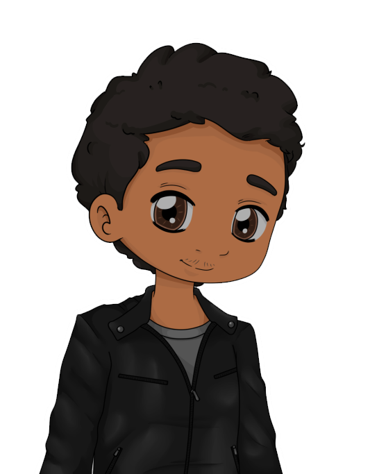

BIP BIP BIP BI poc
Déjà la troisième fois que le réveil d’Ivan sonnait. Il jeta un regard furtif : 8h15. Wait… 8h15 ?? Il se débarrassa violemment sa couverture ; il était en retard. Comme il avait raté son bus, il allait devoir courir ! Tant mieux, ça lui ferait les jambes.
Arrivé à 10h20, il toqua à la porte de la G115. À peine 5 minutes après, il était viré avec Samy et Léopold pour avoir fait les cons.
 Putain mais les gars vous êtes vraiment des attardés !
Putain mais les gars vous êtes vraiment des attardés !
 Noon !
Noon !
 Du coup qu’est-ce qu’on fait ?
On se fait bab’ ?
Allez !
Délaissant leurs scolarités, ils se dirigèrent vers la cafétéria. Après une partie minable, Samy parti pisser, laissant Ivan et Léopold face à deux no name. La cafétéria était particulièrement vide aujourd’hui. Le soleil illuminait la pièce, et chauffait l’air de ce vendredi. Ivan regardait Léopold. Il lui enviait sa barbe, son menton, ses épaules… En fait, il complexait carrément de ne pas avoir son métabolisme. Léopold était penché sur son téléphone, ne voyant donc pas le regard perçant d’Ivan. Il se leva avec un air grave, avant de l’adoucir lorsqu’il croisa celui d’Ivan.
Quelque chose ne va pas ?
Si, si… C’est juste que je…
DOUNDIDOUDOUNDINDIDOUDOUNDINDIDOUDOUNDINDOUN
La sonnerie. Léopold se tut le temps qu’elle passe.
C’est juste que je…
Yo.
Qu’est-ce que tu branlais fils de pute ?
Eh bah ! Il était long ce pipi !
Je vais fumer, vous m’accompagnez ?
Ok j’arrive.
Léopold les regarda partir, frustré de ne pas avoir pu révéler à Ivan que… non, il n’aurait pas pu lui expliquer de toute façon. Et puis, Ivan était trop naïf, il valait mieux pour lui qu’il reste en dehors de ça.
Allez-y, je vous rejoins.